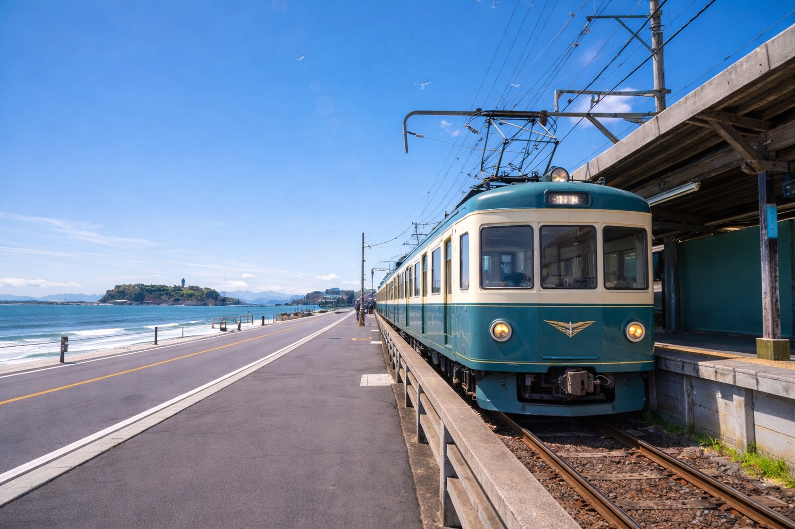
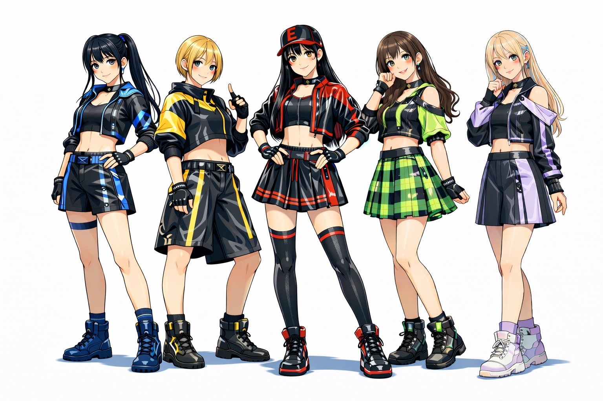
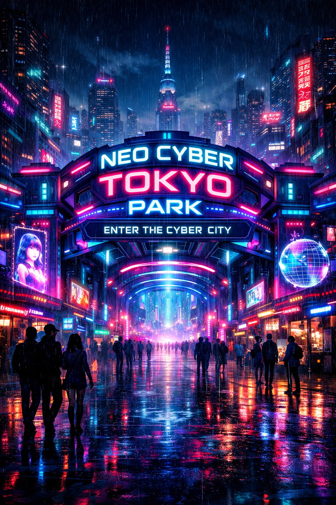
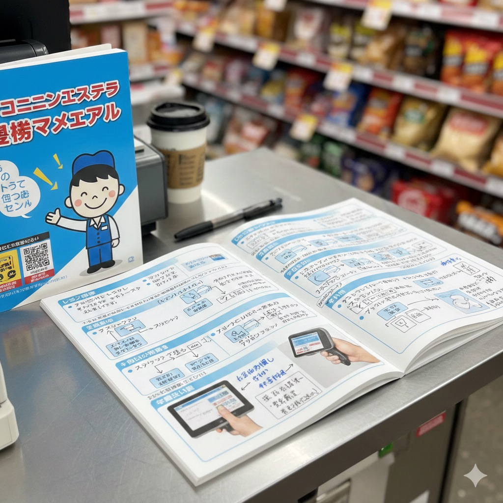
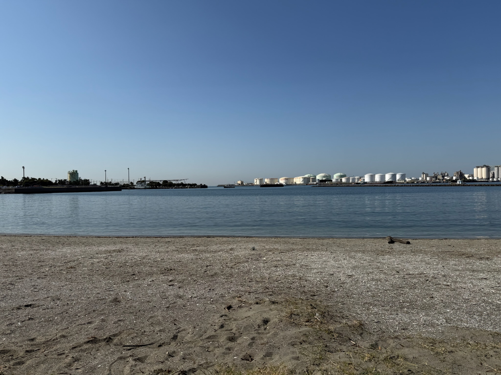
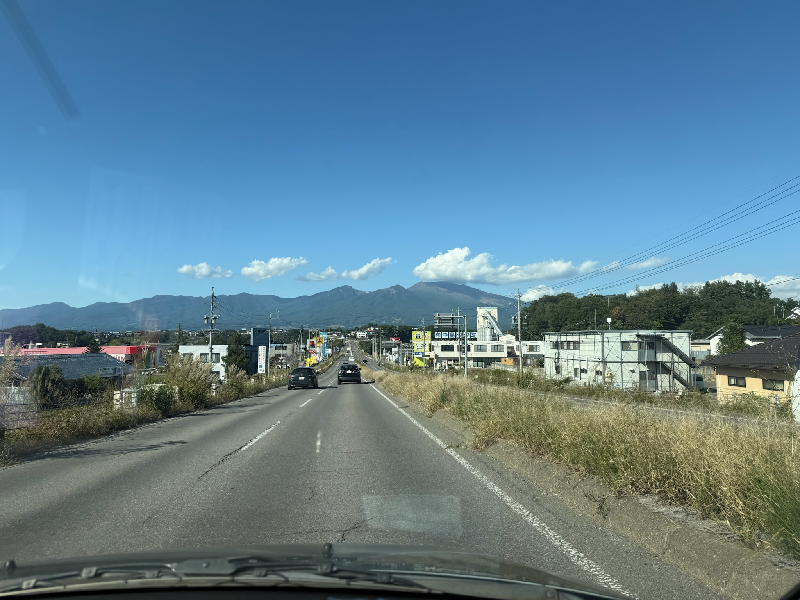

About
HTML/CSSを用いた静的Web制作を行い、分かりやすく整ったデザインを大切にしています。 制作期間：2日
架空のインフラ企業「PIPELINE Inc.」を想定した
コーポレートサイトを制作。
都市・ネットワーク・インフラをテーマに
「人と人、人とサービスをつなぐ」
世界観を表現しました。
制作目的：コーポレートサイト構成と
ヒーローセクションのデザイン実装
 制作期間：1日
架空の海沿いカフェを想定し、
セクション構成・レスポンシブ対応・
世界観表現を意識して制作。
架空アイドル公式サイト
架空アイドルグループの公式サイトを想定して制作。
JavaScriptによるメンバー切替、ギャラリー、FAQなどの
UIインタラクションを実装しました。
 Vital Idol Project
架空のバーチャルアイドルプロジェクトの公式サイトを想定して制作。
JavaScriptによるメンバー切替機能とネオンUIデザインを実装しました。
 電脳世界＜NEO TOKYO>をテーマにしたアミューズメントパークの公式サイト
アミューズメント施設の公式サイトを想定して制作。
JavaScriptによる特殊演出、MAP、各エリアなどの
UIインタラクションを実装しました。
制作期間：複数日
NEO AIが管理する仮想都市をテーマに、
認証・ランク制アクセス・ストレス監視・
AI音声案内などを実装した体験型Webサイト。
  HTML / CSS 制作期間：2日
目的：複数の案件ページを作るために制作。
工夫：ヘッダー画像を変えることで
別案件として見えるデザインに調整。
制作目的：HTML/CSSの基礎設計と
レスポンシブ対応の実践
 HTML / CSS 制作期間：3日
目的：HTML/CSSの基礎力を可視化するために制作。
工夫：スマホ表示でも読みやすい
余白と構成を意識。
制作目的：HTML/CSSの基礎設計と
レスポンシブ対応の実践
見る人が迷わない「分かりやすい構成」と、読みやすい余白・文字サイズを意識して制作します。
これまで接客・現場運営を通して「相手の立場で考える」「分かりやすく伝える」ことを大切にしてきました。
Web制作でも同じように、丁寧で安心感のある対応を心がけます。
対応できること：テキスト変更／画像差し替え／表示崩れの調整／シンプルなLP制作（静的ページ）
Works
PIPELINE Inc.
cafe de TUBE

One Forest Melody
NEON CIRCUIT
NEO CYBER TOKYO PARK

NEO TOKYO CITY
架空LPサイト
ポートフォリオサイト
まずは1ページの修正など、小さなご依頼から対応しています。
ご相談はContactからお気軽にどうぞ。
Contact
Contact
Web制作のご相談・ご質問は、下記よりお気軽にご連絡ください。
小さな修正や「これできる？」といった相談も歓迎です。
まずは1ページの修正など、小さなご依頼から対応しています。
初めての方も安心してご相談ください。内容を確認のうえ丁寧に対応します。
※ 現在はポートフォリオ掲載用のため、まずは簡単なご相談から対応しています。
連絡先：
・ココナラ（準備中）
・メール（準備中）